autowisp.tests.test_expressions module
Class Inheritance Diagram
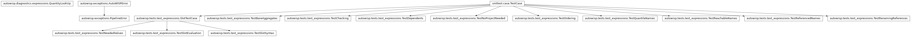
Tests for the database-free half of diagnostic expressions.
Everything here runs against a library and values passed in as arguments, so there is no database, no Django and no fixture beyond a dictionary – which is the point of keeping this tier free of both.
- class autowisp.tests.test_expressions.SlotTestCase(methodName='runTest')[source]
Bases:
TestCase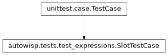
What the channel-slot tests share.
The library exercises every shape a slot comes in: two slots; one expression used at two different bindings, and one used twice at the same; a nested expression binding the slots the other way round; a quantity over the time alone, one built on that, and one mixing a subscripted diagnostic with a bare reference.
- bg = {'B': array([4. , 3.7]), 'G0': array([3., 1.]), 'R': array([3.9, 2.3])}
- evaluate_one(quantity, channels)[source]
Return the values of a single instantiation.
Sugar for the common case: everything takes and returns one binding set per quantity, which is what lets two axes be one quantity in two channels, and most cases here want neither.
- fetch(wanted)[source]
Return exactly the values
needed()asks for.Deliberately not “every channel available”: supplying more would hide a walk that under-reports, and that walk answers the series table as well as the fetch, so an omission there is a wrong count rather than merely a missing array.
- jd = array([1., 3.])
Two images’ worth, distinct per channel so that reading the wrong one cannot pass by coincidence.
- library = {'inner': 'bg_center[1] / bg_center[2]', 'mixed': 'bg_center[1] * night', 'night': 'jd - nanmin(jd)', 'outer': 'inner[2,1] + bg_center[1]', 'scaled_night': 'night * 2', 'silly': 'sky_color[1,2] - sky_color[2,3]', 'sky_color': 'bg_center[1] / bg_center[2]', 'twice': 'sky_color[1,2] + sky_color[1,2]'}
- class autowisp.tests.test_expressions.TestBareAggregates(methodName='runTest')[source]
Bases:
TestCase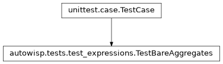
Spotting the
median-where-nanmedian-was-meant mistake.
- class autowisp.tests.test_expressions.TestChecking(methodName='runTest')[source]
Bases:
TestCase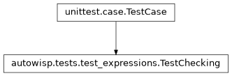
What is reported as wrong with a proposed expression.
- check(name, expression, expressions=None)[source]
Return the problems, using the shared library by default.
- test_cycle_with_an_existing_expression()[source]
Editing one end of a pair is how a cycle usually arrives.
- test_name_may_not_shadow_a_diagnostic()[source]
Both are variables in one flat space, so it is ambiguous.
- test_self_reference_is_a_cycle()[source]
Caught by ordering the candidate library, not a special case.
- class autowisp.tests.test_expressions.TestDependents(methodName='runTest')[source]
Bases:
TestCase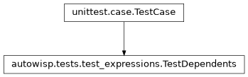
The delete guard.
- class autowisp.tests.test_expressions.TestNeededValues(methodName='runTest')[source]
Bases:
SlotTestCase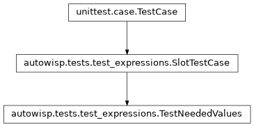
What has to be read before anything is evaluated.
Answered for two callers at once – whatever reads a series in one query, and the table counting the images that record all of it without evaluating anything – so it has to be exact in both directions. The assertions compare whole dictionaries for that reason: what is not needed matters as much, since over-reporting makes a count wrong rather than merely fetching too much.
- test_a_binding_of_the_wrong_length_is_refused()[source]
Too few or too many: either would plot something else.
Too many is the one that could pass unnoticed – the extra channel binds no parameter, so it would simply be dropped.
- test_one_expression_at_two_bindings_needs_both()[source]
The channels come from resolving each reference’s arguments.
- test_one_quantity_asked_for_at_two_bindings()[source]
Both are walked, neither replacing the other.
The two axes of a plot may be one quantity read in two channels – which is how a diagnostic is compared between them – so what is wanted cannot be one binding per quantity.
- class autowisp.tests.test_expressions.TestNoProjectNeeded(methodName='runTest')[source]
Bases:
TestCase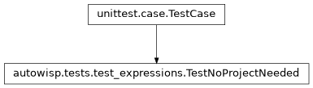
Validation is the same everywhere, so it needs no database.
A
diagnostic_typerow can only be seeded from the static catalogue or created by the quantile branch, which refuses every other name. So the vocabulary cannot vary between projects, and an expression means the same thing in all of them – which is what lets one library be shared.
- class autowisp.tests.test_expressions.TestOrdering(methodName='runTest')[source]
Bases:
TestCase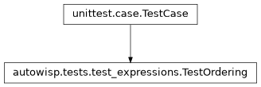
What has to be evaluated, and in what order.
- test_cycle_names_the_loop_and_not_its_dependents()[source]
An expression merely downstream of a cycle is not implicated.
dis unreachable becauseaandbreference each other, butdis not itself part of the problem and naming it would send the reader to the wrong expression.
The property that makes evaluation non-redundant.
- test_needed_diagnostics_are_transitive()[source]
Reported through the chain, not just one level down.
- test_only_the_targets_subtree_is_ordered()[source]
Asking for one expression does not drag in the library.
- class autowisp.tests.test_expressions.TestQuantileNames(methodName='runTest')[source]
Bases:
TestCase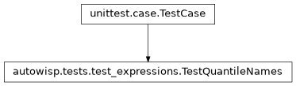
The diagnostics named by a pattern rather than listed.
pixel_q*diagnostics are created bycalibraterather than seeded, so they are the one part of the vocabulary that cannot be enumerated. They must still resolve as variables and still be refused as expression names, and both come from the same predicate.- test_a_name_no_diagnostic_answers_to_is_unresolvable()[source]
pixel_quantilesis one such name, and nothing special now.It once stood for the whole
pixel_q*family and was reserved against being taken by an expression. Each quantile is an ordinary quantity with a section of its own, so the family name means nothing to anything and refuses like any other typo.
- test_a_near_miss_is_still_unresolvable()[source]
The pattern must not become a licence for anything similar.
- test_a_quantile_may_not_be_taken_as_a_name()[source]
The predicate reserves as well as resolves, which is easy to miss.
Otherwise an expression could be named
pixel_q999and shadow a real quantile – ambiguous in a flat name space, and undetectable afterwards because by then both are simply variables.
- test_a_quantile_resolves_as_a_variable()[source]
Nothing enumerates these, so only the pattern can accept them.
- test_a_quantile_survives_the_ordering_pass()[source]
A composed expression must not be rejected by the cycle check.
Ordering and the direct check have to agree about what a name may mean, or
check_expressioncontradicts itself: accepting a name, then reporting it unresolvable from the pass looking for cycles. One shared predicate is what makes that impossible.
- class autowisp.tests.test_expressions.TestReachableNames(methodName='runTest')[source]
Bases:
TestCase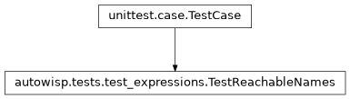
What an expression is allowed to reach.
Parsing is not what makes this safe – most attacks are perfectly valid expressions. The evaluator’s symbol table is, and these pin the part of it AutoWISP chooses rather than inherits.
- test_filesystem_access_is_refused()[source]
openis dropped from the evaluator, so the name is unknown.Asteval permits reading files; harmless for text the local user typed, but expressions travel between installations in export files, so a shared one must not be able to read
~/.ssh.
Also when buried in something that would otherwise plot.
- class autowisp.tests.test_expressions.TestReferencedNames(methodName='runTest')[source]
Bases:
TestCase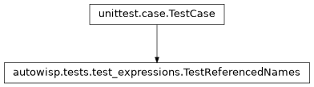
Reading the names out of an expression.
- class autowisp.tests.test_expressions.TestRenamingReferences(methodName='runTest')[source]
Bases:
TestCase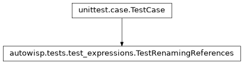
Carrying dependents through a rename.
The one place expression text is rewritten, so what it must not touch matters as much as what it must.
- test_a_longer_name_containing_it_is_untouched()[source]
The case that kills a textual replace.
rel_bgmerely starts withrel; renamingrelmust leave it alone, and onlyastknows where one identifier ends.
- test_a_string_literal_is_untouched()[source]
Text that merely looks like the name is not a reference.
- test_an_unmentioned_name_changes_nothing()[source]
Every expression in a library is offered to this, not just the dependents.
- class autowisp.tests.test_expressions.TestSlotEvaluation(methodName='runTest')[source]
Bases:
SlotTestCase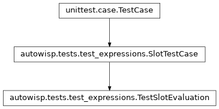
Evaluating quantities against the values the walk asked for.
Every case here fetches exactly what the walk reported, so each also asserts the two agree – the pairing that would otherwise drift apart unnoticed.
- test_a_chain_of_channel_free_expressions()[source]
scaled_nightreadsnightreads the time, all bare.Each has to be a value in the symbol table rather than a lookup, since a bare name never reaches
__getitem__, and in an order that respects what they read.
- test_a_nested_binding_is_not_the_callers()[source]
outer[1,2] = inner[2,1] + bg_center[1].The case that returns a wrong number rather than an error if a lookup ever holds a binding of its own instead of reading the one belonging to the body being evaluated.
- test_a_plain_diagnostic_is_a_quantity_too()[source]
One channel, no expression, and the same call resolves it.
- test_a_quantity_over_the_time_alone()[source]
Written bare, there being no channel to subscript it with.
- test_an_instantiation_is_computed_once()[source]
Asked for twice, the same array comes back.
Identity rather than equality, and rather than the size of the cache: re-evaluating would overwrite the one entry with an equal but distinct array, so only identity tells the two apart.
- test_an_unfetched_channel_is_reported()[source]
A miss means the walk and the fetch disagree, which is a fault in the pair rather than something to repair here.
Which is why the two are resolved in one call, not one each.
- test_one_body_evaluated_at_two_bindings()[source]
sky_coloris B/R in one term and R/G0 in the other.
- test_one_diagnostic_drawn_in_two_channels()[source]
bg_centeragainstbg_center, which is a colour plot.Both come back, told apart by the binding that asked for each. A result keyed by quantity alone would hold one of them and draw it on both axes, which looks like a perfectly good plot.
- class autowisp.tests.test_expressions.TestSlotSyntax(methodName='runTest')[source]
Bases:
SlotTestCase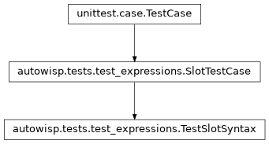
Reading channel slots out of an expression.
- test_a_slot_must_be_a_whole_number()[source]
Anything else cannot name a channel, and says so here rather than failing later as an unresolvable name.
- test_parameters_are_derived_and_ordered()[source]
Nothing is declared, so nothing can drift out of step.
- autowisp.tests.test_expressions._library = {'offset': 'rel[1] + bg_center[1]', 'rel': 'astrom_residual[1] / diagonal_fov[1]', 'scaled': 'rel[1] / nanmedian(rel[1])'}
two expressions share
rel. Everything is read in slot 1, this being about composition rather than about channels; the slot classes below bind several.- Type:
A small library with a diamond in it